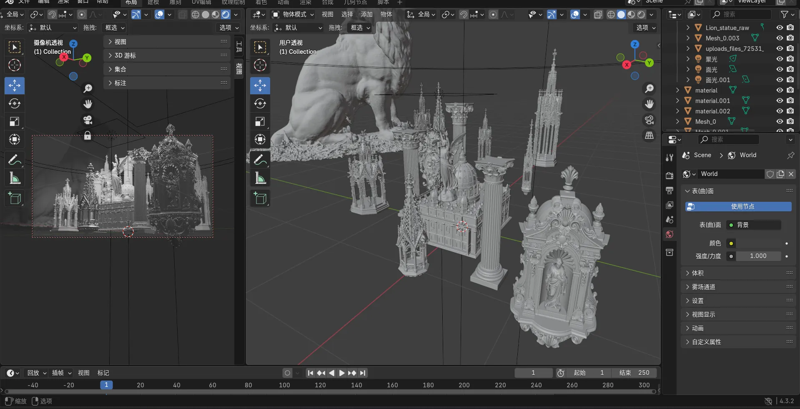
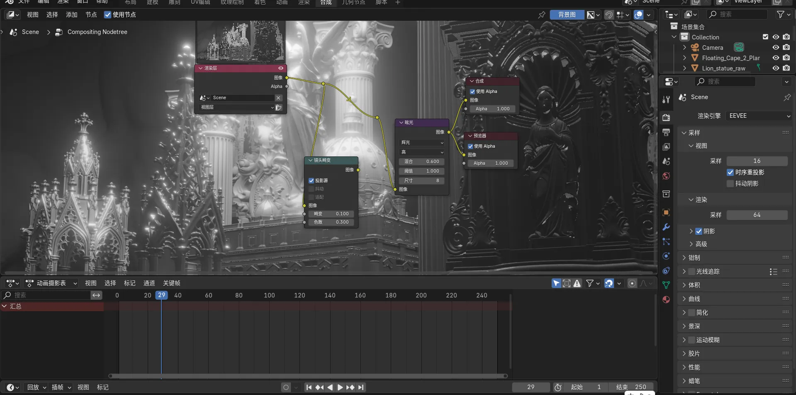
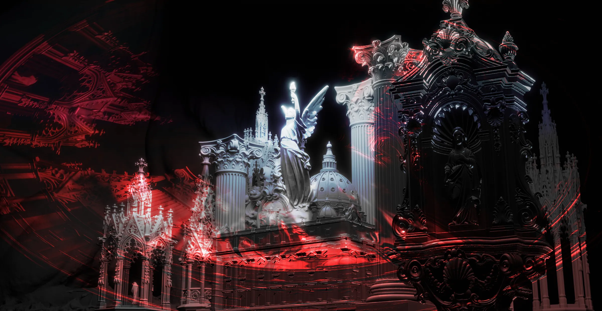
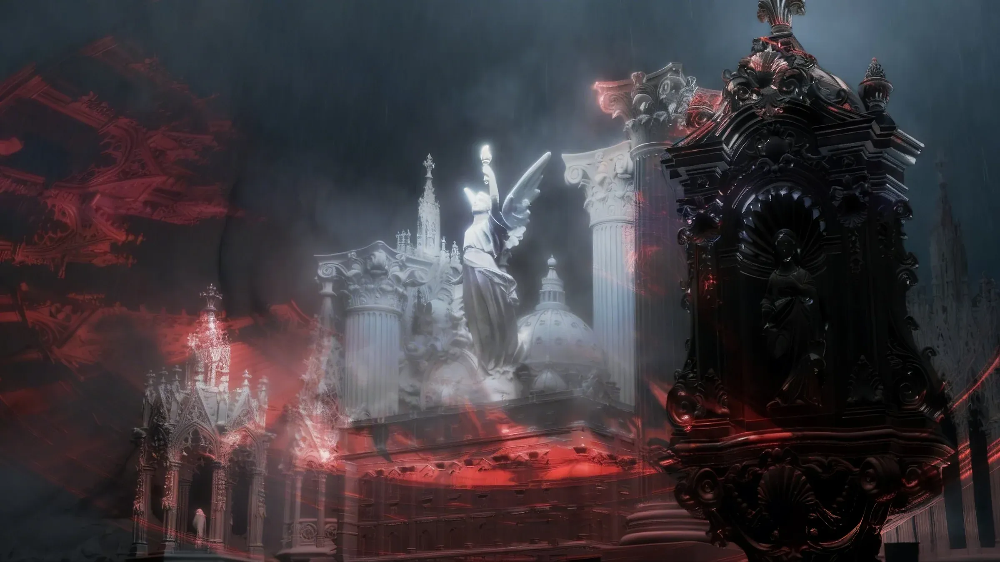

从立项构想到最终成像 —— 一件数字作品的完整生命周期
每一件作品的起点，都是一个无法被忽视的视觉母题。 对于《哥特的余烬》而言，这个母题是 哥特式教堂空间中天使举火炬的形象，与暗红色光场的并置。 但当我们追问这个母题为何具有如此强的引力时—— 答案不在十二世纪的法国，而在更幽深处： 在人类集体无意识的底层结构之中。
哥特建筑的核心语言——尖拱、肋架穹顶、飞扶壁—— 本质上是一种关于"向上"的技术： 将沉重的石材转化为向天空延伸的光之通道。 但"向上"这个冲动本身远比建筑古老。 它是人类最原始的空间直觉之一： 巴别塔、埃及方尖碑、玛雅金字塔、佛教窣堵坡、建木通天—— 每一个文明都在用各自的技术重复同一个姿态， 试图触碰那不可触碰之处。
荣格将这种冲动归入集体无意识的原型结构： 垂直轴是人之为人的基本存在坐标—— 上是超越，是神性，是意识所能抵达的最远处； 下是根基，是黑暗，是无意识的深渊。 哥特教堂不过是这个原型在中世纪欧洲的一次物质化显现： 它用石材和玻璃将"向上"凝固为可触摸的空间。 当我们在数字空间中重建它时， 重建的不只是一种建筑风格， 而是这个延续了数万年的垂直冲动本身。
天使（Angel / ἄγγελος，"信使"）并非某一宗教的专属符号。 在更广阔的跨文化视野中，她是"跨界者"的原型—— 赫尔墨斯穿梭奥林匹斯与冥界，引导灵魂渡河； 萨满在天地之间往返，为部落取回失落的魂魄； 佛教天人以神通力往来色界与欲界。 荣格称之为"灵媒"（psychopomp）原型—— 那个在意识与无意识之间、生与死之间、 已知与未知之间架设桥梁的形象。
在这件作品中，天使举着火炬。 火炬即光——而光在所有已知文明中都是意识的象征： 柏拉图洞穴外的太阳、佛教"无明"对面的"明"、 《创世记》中"要有光"的第一句话。 天使举火炬，意味着信使本身携带着意识的火种， 站在黑暗与光明的交界处。 她不照亮什么，也不指引什么—— 她只是站在那里，举着。 这个"举着"的姿态，比照亮本身更古老、更沉默。
笼罩整座教堂的暗红色光场，不是装饰性的色调选择。 红色是人类使用的第一种颜料—— 十万年前，布隆伯斯洞穴中已有人类用赭石刻下抽象图案； 拉斯科洞穴的壁画以红赭石描绘野牛的呼吸。 红色在所有文明中都是生命力的同义词： 血液、火焰、黎明、体温。 它是直接从身体内部流出的颜色—— 不需要想象，只需要伤口。
但在这件作品中，红色不是燃烧的红，而是 余烬的红。 余烬不是火——它是火离去之后残留的温度。 殉道者的血已经流过了，炼狱的火焰已经熄灭了， 《启示录》的七印已经开启了—— 一切都已发生，而红色是那些已结束之事 在视觉世界中最后的回声。 这是一种关于"消退中的存在"的颜色： 不是在场的炽烈，而是在场刚刚离去后、 空气中尚未冷却的那个瞬间。
当垂直性（向上）、信使（跨界）、余烬红（消退中的存在） 三者交汇于同一画面时，它们各自携带的原型能量开始共振。 这不是一个人在十二世纪的法国建造教堂的故事， 而是人类从洞穴壁画时代起就一直在讲述的故事—— 我们不断建造，不断派遣信使，不断点火， 然后看着火熄灭，只留下余温。 每一次重建都是对上一次的追忆， 每一座教堂都是对洞穴的重写。
立项阶段的任务，就是辨识出这种共振， 并将它转化为可执行的技术路线： 确定媒介（3D渲染 + 后期合成）、 确定风格基调（暗红哥特 + 古典雕塑）、 确定核心视觉锚点 （天使/火炬作为光源中心，钟柜作为前景框架）。 构思由此进入物质化的进程—— 原型变成图像，直觉变成参数， 而那些来自集体无意识深处的幽暗母题， 最终凝固为一帧可以被观看的画面。

所有三维元素均在 Blender 中从零搭建。 场景的核心构件包括：哥特式尖塔结构（多组飞扶壁与肋架穹顶）、 科林斯柱式群组、带雕刻细节的巴洛克钟柜、 以及位于视觉中心的天使持火炬雕像。 画面左侧还布置了一尊狮子雕像以增加空间的纵深感与古典纪念碑感。
建模阶段的关键决策在于多边形密度与细节层级的管理： 近景物体（钟柜表面浮雕、天使羽翼纹理）使用较高细分以保证渲染时的清晰度； 远景建筑则采用低多边形配合法线贴图的方式， 在控制计算成本的同时保留视觉可信度。 整个场景使用统一的全局坐标系， 以便后续灯光与相机的精确对位。

渲染引擎采用 Blender 内置的 EEVEE 实时渲染器， 配合 Compositing 节点树进行后期合成。 从截图中可以看到完整的合成管线： 渲染层（Render Layers）经过 Glare（辉光/泛光）节点产生光源溢出效果， 再通过色彩校正节点调整整体色调曲线。
辉光（Glare/Bloom）是本作渲染阶段的核心特效—— 它模拟了强光源在光学系统中的散射现象， 使天使火炬产生的亮部产生自然的边缘发光。 合成器中还配置了雾体积（Volume / Fog）的基础参数， 为后续的大气深度效果预留接口。 此阶段输出的基础渲染图层将进入 Photoshop 进行最终后期。

进入 Adobe Photoshop 后，渲染基底被叠加多层效果。 最显著的视觉干预是覆盖于整个画面的红色光效层—— 通过颜色叠加（Color Overlay）或渐变映射（Gradient Map）模式实现， 使场景从冷灰调转向炽热的暗红色域。
同时，画面中被嵌入了红色图形线条元素： 这些半透明的几何线条如同数字裂痕或能量轨迹， 贯穿建筑的轮廓线，打破摄影写实的幻觉。 这一步是"绘画性"介入"渲染性"的关键时刻—— 计算机生成的精确图像被手绘般的笔触痕迹所干扰、标记、重新占有。 对比度提升、局部加深（Burn）、以及选择性锐化进一步强化了画面的戏剧张力。

最终环节引入大气透视（Atmospheric Perspective）与景深模糊（Depth of Field）。 通过 Z-Depth 通道（深度信息）驱动的雾化效果， 远处的建筑逐渐消融在灰蓝色的薄雾中， 形成明确的空间层次：前景清晰、中景过渡、远景隐没。
雾效不仅是技术手段，也是情绪装置—— 它使画面获得了一种"时间凝固"的质感： 天使火炬的光芒在雾气中发生散射，形成柔和的光锥， 红色光场的边界变得模糊而弥散， 整个场景仿佛被封存在一个永恒的黄昏时刻。 这是《哥特的余烬》从数据变为图像的最后一步， 也是"余烬"之名得以成立的视觉依据—— 不是燃烧，而是燃烧之后、冷却之前的那个瞬间。